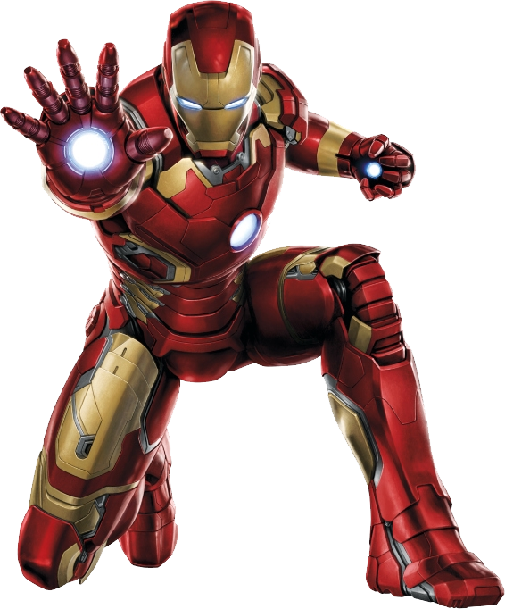

Welcome To
IRON MAN
World
WHO IS IRON MAN ?

Tony Stark is the wealthy son of industrialist and weapons manufacturer Howard Stark and his wife, Maria. Tony grew up a genius with a brilliant mind for technology and inventions and, naturally, followed in his father’s footsteps, inheriting Stark Industries upon his parents’ untimely death. Tony designed many weapons of war for Stark Industries, far beyond what any other company was creating, while living the lifestyle of a bon vivant.